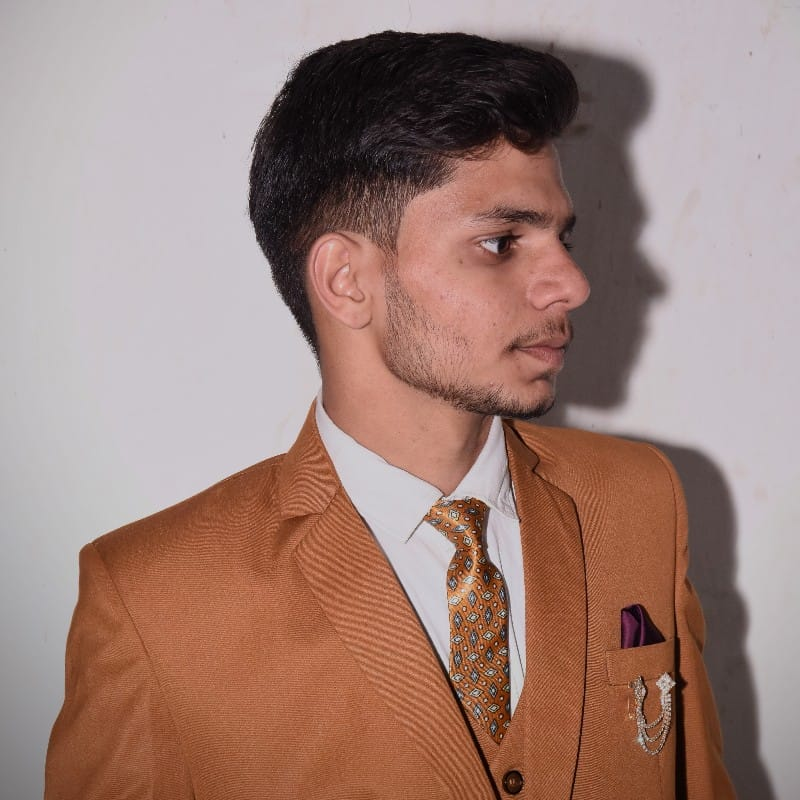

01 | OVERVIEW
What it is
Tracked robotic platform developed through multiple iterations of mechanical design, fabrication and system integration.

Bhavishya ChaudharyROBOTICS | MECHANICAL DESIGN
Tracked robotic platform developed through multiple iterations of mechanical design, fabrication and system integration.
Tracked robotic platform developed through multiple iterations of mechanical design, fabrication and system integration.
The project has been used to improve mechanical design decisions, fabrication methods and system integration across iterations.